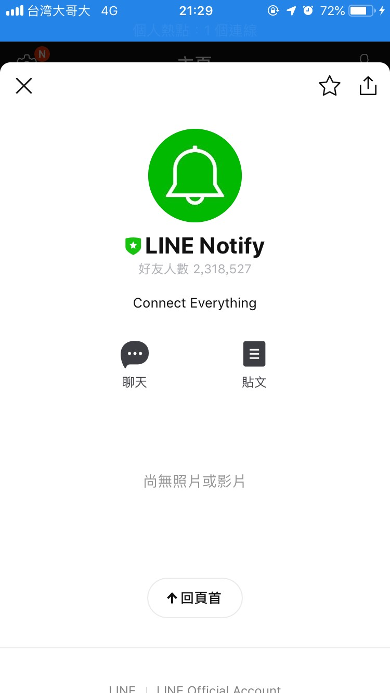

<!DOCTYPE html>
<html lang="zh-tw">
    
<head>
    <meta charset="UTF-8">
    <meta name="viewport" content="width=device-width, initial-scale=1">
    <meta name="generator" content="Yee的補坑筆記">
    <title>Trello X Line - 再也不會忘記寫文章 - Yee的補坑筆記</title>
    <meta name="author" content="Yee">
    
        <meta name="keywords" content="laravel,docker,">
    
    
    
    <script type="application/ld+json">{"@context":"http://schema.org","@type":"BlogPosting","author":{"@type":"Person","name":"Yee","sameAs":["mailto:amung966w@gmail.com"],"image":"yee.jpeg"},"articleBody":"繼上一篇先將Trello卡片開好且設上每週的due day，\n但Trello的通知只有在due day前寄一封信通知，\n這是不夠的啊啊啊啊啊～～\n因此我要將它進化到定時通知趕快寫文章呀！！！！\n\n\n\n我比較習慣使用python，所以本文還是使用python3～\n本文所採用的環境\b\n\nMax OSX 10.15\nPython 3.7.3\n\n本文使用vs code的終端 或 mac終端執行py，也可以自行選擇jupyter\npython套件\n\nrequests\njson\nconfigparser\ndatetime\ntime\nsys\nline_notify\n\n\n首先先來註冊Line Notify，點下Generate token，輸入上這notify的名字，\n接著如果只要推播給自己請選擇 1-on-1 的選項，\n如果你也和我一樣是一群人，就選擇你們的群組吧！恭喜你已經拿到token摟！\n接著打開Line搜尋官方帳號 Line notify並加入好友，如果是單人就到這裡，如果是群組，請把它加到群組裡！！！\n\n接著打開上一篇所使用的ini檔，\n把這次的line token加進去～\n1234567[Line];register token https:&#x2F;&#x2F;notify-bot.line.me&#x2F;my&#x2F;line_token &#x3D; your token[Url];Lineurl &#x3D; &quot;https:&#x2F;&#x2F;notify-api.line.me&#x2F;api&#x2F;notify&quot;\n接著開一支py吧！跟上一篇一樣的方式初始化、讀取ini…吧\n12345678910111213141516171819202122import requestsimport jsonimport datetime as dtimport line_notify as lineimport configparserimport sys#啟動時間start_time = time.time()conf = configparser.ConfigParser()conf.read(\"config.ini\", encoding=\"utf-8\")#Trello Key &amp; Tokenkey = conf.get('Trello' , 'key')token = conf.get('Trello' , 'token')board = conf.get('Trello' , 'board')#line tokenline_token = conf.get('Line' , 'line_token')#line nptify urlurl_notify = conf.get('Url' , 'notify')\n以上初始化完後，就準備進入我們這次的主題\n預計的步驟是\n\n抓出當週誰還沒寫文章\n推播吵死他！！！\n\n我們先來設計取當週週日的日期，\n不過datetime只能告訴我這是禮拜幾，沒辦法直接告訴我禮拜日的日期，\n所以～～～ 自己來判斷吧…\n1234567891011121314151617# 先今天的日期today = dt.datetime.now()checkday = dt.datetime.now()# 製作一個參數表示1天，待會拿來計算用oneday = dt.timedelta(days = 1)# 判斷出週日的日期# 當今天不是禮拜日，就加1# isoweekday() 0 &amp; 7 都是禮拜日喔！while checkday.isoweekday() != 7:    checkday += oneday# 今天距離週日還有幾天lessday = checkday - today# 轉成文字才能與Trello比對checkday = checkday.strftime(\"%Y-%m-%d\")\n計算完日期之後，取出卡片上的due day來做判斷，\n先來看一下Trello Api，我們要取list的name、open的card、card的due day、card的dueComplete狀態，所以我們的query string長這樣\n12345678910111213141516# 因為要組上board id，所以這裡沒有使用ini裡的urlurl_get_list = \"https://api.trello.com/1/boards/\"+board+\"/lists\"querystring = &#123;    \"cards\":\"open\",    \"card_fields\":[\"due\",\"dueComplete\"],    \"filter\":\"open\",    \"fields\":\"name\",    \"key\":key,    \"token\":token&#125;# 取得board裡的卡片清單req = requests.request('GET', url_get_list, querystring)card_lists = json.loads(req.text)print(card_lists)\n在終端機看到密密馬馬的這串，就表示我們成功取到list的清單摟～～\n接著解析它，並設計迴圈來檢查文章寫完了沒，\n123456789101112131415161718192021finish_users = []not_finish_users = []# 偵測卡片的due date有沒有截止日的for lists in card_lists:    finish = False    for card in lists['cards']:        # 卡片沒設定due的話跳過這一張卡片        if card['due'] == None:            continue                # 抓卡片的due date 跟 是否打勾        if (checkday == card['due'].split('T')[0]) and (card['dueComplete']):            finish = True            break        # 紀錄該週完成與未完成的人    if not finish:        not_finish_users.append(lists['name'])    else:        finish_users.append(lists['name'])\n我們團隊說好寫完文章的，要去把他的due day打勾，\n所以我要檢查due day的狀態是否為true，\n抓出誰沒完成後，最後一的動作就是發Notify啦～\n在這之前先來製作要跟大家說的話，\n1234567891011121314151617# 製作訊息# \\n是python的字串斷行～message = &#123;'message': \"\\n\"    \"Hi 各位安安 ～ \\n\"+    \"--- \\n\"+    \"本週已完成的人： \\n\"+    (\"，\".join(finish_users))+\"\\n\"+    \"請下週再接再厲～～\\n\"+    \"--- \\n\"+    \"本週未完成的人： \\n\"+    (\"，\".join(not_finish_users))+\"\\n\"+    \"距離本周截止你只剩下\"+str(lessday.days)+\"天了～～ \\n\"+    \"趕快去寫文章！！ \\n\"+    \"--- \\n\"+    \"投稿連結： \\n\"+    \"https://forms.gle/MvufZiucPir4yhHb6\"&#125;\n然後就是把這串message傳到line notify拉～\n1234567headers = &#123;    \"Authorization\": \"Bearer \" + line_token,     \"Content-Type\" : \"application/x-www-form-urlencoded\"&#125;req = requests.request(\"POST\", url_notify, headers=headers, params=message)print(req.status_code)\n看到http200了，趕快來看看line上出現了什麼～\nすばらし～～  \n看到誰沒完成，就趕快tag他，給他溫暖的關愛 ❤️❤️❤️\n最後把code丟到server上，並設定上crontab，\n之後每週就會在固定的時間通知大家拉！！\n至於排程的部分～ 可以選用linux 或者 windows內建的排程，\n這邊有機會再補上linux的，\n因為手上暫時沒有可用的小server QQ…\n\n後記\n因為專案的關係，了解到可以用Line Notify來做一些系統通知，\n而且這服務似乎是沒有計算費用的～～\n比起開一個line@來推播，可以省下一些費用，\n這篇教學是透過開發者串連Notify到群組發訊息，\n如果是要做在系統讓user來綁定Line Notify，\n其實對於一些使用者來說是有一點操作門檻的，\n各別綁定這部分沒有在這篇文章列出來，\n因為那又是另外一回事了～～\n有機會再來做一篇\n開個小服務讓user到平台上綁定，並各別推播訊息到user手中\n本文code的連結：產生中… XD\n希望大家用的開心～ 準時寫文章～ 一起拿金質獎～\n","dateCreated":"2020-02-27T21:00:30+08:00","dateModified":"2020-02-28T00:45:37+08:00","datePublished":"2020-02-27T21:00:30+08:00","description":"繼上一篇先將Trello卡片開好且設上每週的due day，\n但Trello的通知只有在due day前寄一封信通知，\n這是不夠的啊啊啊啊啊～～\n因此我要將它進化到定時通知趕快寫文章呀！！！！","headline":"Trello X Line - 再也不會忘記寫文章","image":[],"mainEntityOfPage":{"@type":"WebPage","@id":"https://yeeinhole.github.io/2020/02/27/trello-notify2/"},"publisher":{"@type":"Organization","name":"Yee","sameAs":["mailto:amung966w@gmail.com"],"image":"yee.jpeg","logo":{"@type":"ImageObject","url":"yee.jpeg"}},"url":"https://yeeinhole.github.io/2020/02/27/trello-notify2/","keywords":"w3HexSchool, python, line, line notify, trello"}</script>
    <meta name="description" content="繼上一篇先將Trello卡片開好且設上每週的due day， 但Trello的通知只有在due day前寄一封信通知， 這是不夠的啊啊啊啊啊～～ 因此我要將它進化到定時通知趕快寫文章呀！！！！">
<meta property="og:type" content="blog">
<meta property="og:title" content="Trello X Line - 再也不會忘記寫文章">
<meta property="og:url" content="https://yeeinhole.github.io/2020/02/27/trello-notify2/index.html">
<meta property="og:site_name" content="Yee的補坑筆記">
<meta property="og:description" content="繼上一篇先將Trello卡片開好且設上每週的due day， 但Trello的通知只有在due day前寄一封信通知， 這是不夠的啊啊啊啊啊～～ 因此我要將它進化到定時通知趕快寫文章呀！！！！">
<meta property="og:locale" content="zh_TW">
<meta property="og:image" content="https://yeeinhole.github.io/image/trello_notify2/line_notify.png">
<meta property="og:image" content="https://yeeinhole.github.io/image/trello_notify2/line_notify2.png">
<meta property="og:image" content="https://yeeinhole.github.io/image/trello_notify2/line_notify3.png">
<meta property="og:image" content="https://yeeinhole.github.io/image/trello_notify2/line_notify4.jpg">
<meta property="og:image" content="https://yeeinhole.github.io/image/trello_notify2/line_notify5.jpg">
<meta property="og:image" content="https://yeeinhole.github.io/image/trello_notify2/trello_api.png">
<meta property="og:image" content="https://yeeinhole.github.io/image/trello_notify2/card_list.png">
<meta property="og:image" content="https://yeeinhole.github.io/image/trello_notify2/line_notify6.png">
<meta property="og:image" content="https://yeeinhole.github.io/image/trello_notify2/notify_reseponse.png">
<meta property="article:published_time" content="2020-02-27T13:00:30.000Z">
<meta property="article:modified_time" content="2020-02-27T16:45:37.717Z">
<meta property="article:author" content="Yee">
<meta property="article:tag" content="w3HexSchool">
<meta property="article:tag" content="python">
<meta property="article:tag" content="line">
<meta property="article:tag" content="line notify">
<meta property="article:tag" content="trello">
<meta name="twitter:card" content="summary">
<meta name="twitter:image" content="https://yeeinhole.github.io/image/trello_notify2/line_notify.png">
    
    
        
    
    
        <meta property="og:image" content="https://yeeinhole.github.io/assets/images/yee.jpeg"/>
    
    
    
    
    <!--STYLES-->
    
<link rel="stylesheet" href="/assets/css/style-2lqfypdcngq7rgk11flmhgs30biseha2s4rv2frat5edalqervoqqqtncnuh.min.css">

    <!--STYLES END-->
    

    

    
        
    
</head>

    <body>
        <div id="blog">
            <!-- Define author's picture -->


    
        
            
        
    

<header id="header" data-behavior="4">
    <i id="btn-open-sidebar" class="fa fa-lg fa-bars"></i>
    <div class="header-title">
        <a
            class="header-title-link"
            href="/"
            aria-label=""
        >
            Yee的補坑筆記
        </a>
    </div>
    
        
            <a
                class="header-right-picture "
                href="#about"
                aria-label="打開鏈接: /#about"
            >
        
        
            
        
        </a>
    
</header>

            <!-- Define author's picture -->


        
    

<nav id="sidebar" data-behavior="4">
    <div class="sidebar-container">
        
            <div class="sidebar-profile">
                <a
                    href="/#about"
                    aria-label="閱讀有關作者的更多信息"
                >
                    
                </a>
                <h4 class="sidebar-profile-name">Yee</h4>
                
                    <h5 class="sidebar-profile-bio"><p>Hi 我是 Yee，常常不小心就掉進坑中…</p>
</h5>
                
            </div>
        
        
            <ul class="sidebar-buttons">
            
                <li class="sidebar-button">
                    
                        <a  class="sidebar-button-link "
                             href="https://yeeinhole.github.io/"
                            title="首頁"
                        >
                    
                        <i class="sidebar-button-icon fa fa-home" aria-hidden="true"></i>
                        <span class="sidebar-button-desc">首頁</span>
                    </a>
            </li>
            
                <li class="sidebar-button">
                    
                        <a  class="sidebar-button-link "
                             href="/all-categories"
                            
                            title="分類"
                        >
                    
                        <i class="sidebar-button-icon fa fa-bookmark" aria-hidden="true"></i>
                        <span class="sidebar-button-desc">分類</span>
                    </a>
            </li>
            
                <li class="sidebar-button">
                    
                        <a  class="sidebar-button-link "
                             href="/all-tags"
                            
                            title="標籤"
                        >
                    
                        <i class="sidebar-button-icon fa fa-tags" aria-hidden="true"></i>
                        <span class="sidebar-button-desc">標籤</span>
                    </a>
            </li>
            
                <li class="sidebar-button">
                    
                        <a  class="sidebar-button-link "
                             href="/all-archives"
                            
                            title="所有文章"
                        >
                    
                        <i class="sidebar-button-icon fa fa-archive" aria-hidden="true"></i>
                        <span class="sidebar-button-desc">所有文章</span>
                    </a>
            </li>
            
                <li class="sidebar-button">
                    
                        <a  class="sidebar-button-link "
                             href="/friend"
                            
                            title="友情連結"
                        >
                    
                        <i class="sidebar-button-icon fas fa-link" aria-hidden="true"></i>
                        <span class="sidebar-button-desc">友情連結</span>
                    </a>
            </li>
            
                <li class="sidebar-button">
                    
                        <a  class="sidebar-button-link "
                             href="#about"
                            
                            title="關於"
                        >
                    
                        <i class="sidebar-button-icon fa fa-question" aria-hidden="true"></i>
                        <span class="sidebar-button-desc">關於</span>
                    </a>
            </li>
            
        </ul>
        
            <ul class="sidebar-buttons">
            
                <li class="sidebar-button">
                    
                        <a  class="sidebar-button-link " href="mailto:amung966w@gmail.com" target="_blank" rel="noopener" title="Email">
                    
                        <i class="sidebar-button-icon fa fa-envelope" aria-hidden="true"></i>
                        <span class="sidebar-button-desc">Email</span>
                    </a>
            </li>
            
        </ul>
        
    </div>
</nav>

            
            <div id="main" data-behavior="4"
                 class="
                        hasCoverMetaIn
                        ">
                
<article class="post">
    
    
        <div class="post-header main-content-wrap text-left">
    
        <h1 class="post-title">
            Trello X Line - 再也不會忘記寫文章
        </h1>
    
    
        <div class="post-meta">
    <time datetime="2020-02-27T21:00:30+08:00">
	
		    2月 27, 2020
    	
    </time>
    
        <span>分類 </span>
        
    <a class="category-link" href="/categories/python/">python</a>


    
</div>

    
</div>

    
    <div class="post-content markdown">
        <div class="main-content-wrap">
            <p>繼上一篇先將Trello卡片開好且設上每週的due day，</p>
<p>但Trello的通知只有在due day前寄一封信通知，</p>
<p>這是不夠的啊啊啊啊啊～～</p>
<p>因此我要將它進化到定時通知趕快寫文章呀！！！！</p>
<a id="more"></a>

<hr>
<p>我比較習慣使用python，所以本文還是使用python3～</p>
<p>本文所採用的環境<br></p>
<ol>
<li>Max OSX 10.15</li>
<li>Python 3.7.3</li>
</ol>
<p>本文使用vs code的終端 或 mac終端執行py，也可以自行選擇jupyter</p>
<p>python套件</p>
<ol>
<li>requests</li>
<li>json</li>
<li>configparser</li>
<li>datetime</li>
<li>time</li>
<li>sys</li>
<li>line_notify</li>
</ol>
<hr>
<p>首先先來註冊<a href="https://notify-bot.line.me/my/" target="_blank" rel="noopener">Line Notify</a>，<br><br>點下Generate token，<br><br>輸入上這notify的名字，</p>
<p>接著如果只要推播給自己請選擇 1-on-1 的選項，</p>
<p>如果你也和我一樣是一群人，就選擇你們的群組吧！<br><br>恭喜你已經拿到token摟！</p>
<p>接著打開Line搜尋官方帳號 Line notify並加入好友，<br><br>如果是單人就到這裡，如果是群組，請把它加到群組裡！！！<br></p>
<hr>
<p>接著打開上一篇所使用的ini檔，</p>
<p>把這次的line token加進去～</p>
<figure class="highlight plain"><table><tr><td class="gutter"><pre><span class="line">1</span><br><span class="line">2</span><br><span class="line">3</span><br><span class="line">4</span><br><span class="line">5</span><br><span class="line">6</span><br><span class="line">7</span><br></pre></td><td class="code"><pre><span class="line">[Line]</span><br><span class="line">;register token https:&#x2F;&#x2F;notify-bot.line.me&#x2F;my&#x2F;</span><br><span class="line">line_token &#x3D; your token</span><br><span class="line"></span><br><span class="line">[Url]</span><br><span class="line">;Line</span><br><span class="line">url &#x3D; &quot;https:&#x2F;&#x2F;notify-api.line.me&#x2F;api&#x2F;notify&quot;</span><br></pre></td></tr></table></figure>
<p>接著開一支py吧！跟上一篇一樣的方式初始化、讀取ini…吧</p>
<figure class="highlight python"><table><tr><td class="gutter"><pre><span class="line">1</span><br><span class="line">2</span><br><span class="line">3</span><br><span class="line">4</span><br><span class="line">5</span><br><span class="line">6</span><br><span class="line">7</span><br><span class="line">8</span><br><span class="line">9</span><br><span class="line">10</span><br><span class="line">11</span><br><span class="line">12</span><br><span class="line">13</span><br><span class="line">14</span><br><span class="line">15</span><br><span class="line">16</span><br><span class="line">17</span><br><span class="line">18</span><br><span class="line">19</span><br><span class="line">20</span><br><span class="line">21</span><br><span class="line">22</span><br></pre></td><td class="code"><pre><span class="line"><span class="keyword">import</span> requests</span><br><span class="line"><span class="keyword">import</span> json</span><br><span class="line"><span class="keyword">import</span> datetime <span class="keyword">as</span> dt</span><br><span class="line"><span class="keyword">import</span> line_notify <span class="keyword">as</span> line</span><br><span class="line"><span class="keyword">import</span> configparser</span><br><span class="line"><span class="keyword">import</span> sys</span><br><span class="line"></span><br><span class="line"><span class="comment">#啟動時間</span></span><br><span class="line">start_time = time.time()</span><br><span class="line"></span><br><span class="line">conf = configparser.ConfigParser()</span><br><span class="line">conf.read(<span class="string">"config.ini"</span>, encoding=<span class="string">"utf-8"</span>)</span><br><span class="line"></span><br><span class="line"><span class="comment">#Trello Key &amp; Token</span></span><br><span class="line">key = conf.get(<span class="string">'Trello'</span> , <span class="string">'key'</span>)</span><br><span class="line">token = conf.get(<span class="string">'Trello'</span> , <span class="string">'token'</span>)</span><br><span class="line">board = conf.get(<span class="string">'Trello'</span> , <span class="string">'board'</span>)</span><br><span class="line"></span><br><span class="line"><span class="comment">#line token</span></span><br><span class="line">line_token = conf.get(<span class="string">'Line'</span> , <span class="string">'line_token'</span>)</span><br><span class="line"><span class="comment">#line nptify url</span></span><br><span class="line">url_notify = conf.get(<span class="string">'Url'</span> , <span class="string">'notify'</span>)</span><br></pre></td></tr></table></figure>
<p>以上初始化完後，就準備進入我們這次的主題</p>
<p>預計的步驟是</p>
<ol>
<li>抓出當週誰還沒寫文章</li>
<li>推播吵死他！！！</li>
</ol>
<p>我們先來設計取當週週日的日期，</p>
<p>不過datetime只能告訴我這是禮拜幾，沒辦法直接告訴我禮拜日的日期，</p>
<p>所以～～～ 自己來判斷吧…</p>
<figure class="highlight python"><table><tr><td class="gutter"><pre><span class="line">1</span><br><span class="line">2</span><br><span class="line">3</span><br><span class="line">4</span><br><span class="line">5</span><br><span class="line">6</span><br><span class="line">7</span><br><span class="line">8</span><br><span class="line">9</span><br><span class="line">10</span><br><span class="line">11</span><br><span class="line">12</span><br><span class="line">13</span><br><span class="line">14</span><br><span class="line">15</span><br><span class="line">16</span><br><span class="line">17</span><br></pre></td><td class="code"><pre><span class="line"><span class="comment"># 先今天的日期</span></span><br><span class="line">today = dt.datetime.now()</span><br><span class="line">checkday = dt.datetime.now()</span><br><span class="line"><span class="comment"># 製作一個參數表示1天，待會拿來計算用</span></span><br><span class="line">oneday = dt.timedelta(days = <span class="number">1</span>)</span><br><span class="line"></span><br><span class="line"><span class="comment"># 判斷出週日的日期</span></span><br><span class="line"><span class="comment"># 當今天不是禮拜日，就加1</span></span><br><span class="line"><span class="comment"># isoweekday() 0 &amp; 7 都是禮拜日喔！</span></span><br><span class="line"><span class="keyword">while</span> checkday.isoweekday() != <span class="number">7</span>:</span><br><span class="line">    checkday += oneday</span><br><span class="line"></span><br><span class="line"><span class="comment"># 今天距離週日還有幾天</span></span><br><span class="line">lessday = checkday - today</span><br><span class="line"></span><br><span class="line"><span class="comment"># 轉成文字才能與Trello比對</span></span><br><span class="line">checkday = checkday.strftime(<span class="string">"%Y-%m-%d"</span>)</span><br></pre></td></tr></table></figure>
<p>計算完日期之後，取出卡片上的due day來做判斷，</p>
<p>先來看一下Trello Api，<br><br>我們要取list的name、open的card、card的due day、card的dueComplete狀態，<br>所以我們的query string長這樣</p>
<figure class="highlight python"><table><tr><td class="gutter"><pre><span class="line">1</span><br><span class="line">2</span><br><span class="line">3</span><br><span class="line">4</span><br><span class="line">5</span><br><span class="line">6</span><br><span class="line">7</span><br><span class="line">8</span><br><span class="line">9</span><br><span class="line">10</span><br><span class="line">11</span><br><span class="line">12</span><br><span class="line">13</span><br><span class="line">14</span><br><span class="line">15</span><br><span class="line">16</span><br></pre></td><td class="code"><pre><span class="line"><span class="comment"># 因為要組上board id，所以這裡沒有使用ini裡的url</span></span><br><span class="line">url_get_list = <span class="string">"https://api.trello.com/1/boards/"</span>+board+<span class="string">"/lists"</span></span><br><span class="line"></span><br><span class="line">querystring = &#123;</span><br><span class="line">    <span class="string">"cards"</span>:<span class="string">"open"</span>,</span><br><span class="line">    <span class="string">"card_fields"</span>:[<span class="string">"due"</span>,<span class="string">"dueComplete"</span>],</span><br><span class="line">    <span class="string">"filter"</span>:<span class="string">"open"</span>,</span><br><span class="line">    <span class="string">"fields"</span>:<span class="string">"name"</span>,</span><br><span class="line">    <span class="string">"key"</span>:key,</span><br><span class="line">    <span class="string">"token"</span>:token</span><br><span class="line">&#125;</span><br><span class="line"></span><br><span class="line"><span class="comment"># 取得board裡的卡片清單</span></span><br><span class="line">req = requests.request(<span class="string">'GET'</span>, url_get_list, querystring)</span><br><span class="line">card_lists = json.loads(req.text)</span><br><span class="line">print(card_lists)</span><br></pre></td></tr></table></figure>
<p><br>在終端機看到密密馬馬的這串，就表示我們成功取到list的清單摟～～</p>
<p>接著解析它，並設計迴圈來檢查文章寫完了沒，</p>
<figure class="highlight python"><table><tr><td class="gutter"><pre><span class="line">1</span><br><span class="line">2</span><br><span class="line">3</span><br><span class="line">4</span><br><span class="line">5</span><br><span class="line">6</span><br><span class="line">7</span><br><span class="line">8</span><br><span class="line">9</span><br><span class="line">10</span><br><span class="line">11</span><br><span class="line">12</span><br><span class="line">13</span><br><span class="line">14</span><br><span class="line">15</span><br><span class="line">16</span><br><span class="line">17</span><br><span class="line">18</span><br><span class="line">19</span><br><span class="line">20</span><br><span class="line">21</span><br></pre></td><td class="code"><pre><span class="line">finish_users = []</span><br><span class="line">not_finish_users = []</span><br><span class="line"></span><br><span class="line"><span class="comment"># 偵測卡片的due date有沒有截止日的</span></span><br><span class="line"><span class="keyword">for</span> lists <span class="keyword">in</span> card_lists:</span><br><span class="line">    finish = <span class="literal">False</span></span><br><span class="line">    <span class="keyword">for</span> card <span class="keyword">in</span> lists[<span class="string">'cards'</span>]:</span><br><span class="line">        <span class="comment"># 卡片沒設定due的話跳過這一張卡片</span></span><br><span class="line">        <span class="keyword">if</span> card[<span class="string">'due'</span>] == <span class="literal">None</span>:</span><br><span class="line">            <span class="keyword">continue</span></span><br><span class="line">        </span><br><span class="line">        <span class="comment"># 抓卡片的due date 跟 是否打勾</span></span><br><span class="line">        <span class="keyword">if</span> (checkday == card[<span class="string">'due'</span>].split(<span class="string">'T'</span>)[<span class="number">0</span>]) <span class="keyword">and</span> (card[<span class="string">'dueComplete'</span>]):</span><br><span class="line">            finish = <span class="literal">True</span></span><br><span class="line">            <span class="keyword">break</span></span><br><span class="line">    </span><br><span class="line">    <span class="comment"># 紀錄該週完成與未完成的人</span></span><br><span class="line">    <span class="keyword">if</span> <span class="keyword">not</span> finish:</span><br><span class="line">        not_finish_users.append(lists[<span class="string">'name'</span>])</span><br><span class="line">    <span class="keyword">else</span>:</span><br><span class="line">        finish_users.append(lists[<span class="string">'name'</span>])</span><br></pre></td></tr></table></figure>
<p>我們團隊說好寫完文章的，要去把他的due day打勾，</p>
<p>所以我要檢查due day的狀態是否為true，</p>
<p>抓出誰沒完成後，最後一的動作就是發Notify啦～</p>
<p>在這之前先來製作要跟大家說的話，</p>
<figure class="highlight python"><table><tr><td class="gutter"><pre><span class="line">1</span><br><span class="line">2</span><br><span class="line">3</span><br><span class="line">4</span><br><span class="line">5</span><br><span class="line">6</span><br><span class="line">7</span><br><span class="line">8</span><br><span class="line">9</span><br><span class="line">10</span><br><span class="line">11</span><br><span class="line">12</span><br><span class="line">13</span><br><span class="line">14</span><br><span class="line">15</span><br><span class="line">16</span><br><span class="line">17</span><br></pre></td><td class="code"><pre><span class="line"><span class="comment"># 製作訊息</span></span><br><span class="line"><span class="comment"># \n是python的字串斷行～</span></span><br><span class="line">message = &#123;<span class="string">'message'</span>: <span class="string">"\n"</span></span><br><span class="line">    <span class="string">"Hi 各位安安 ～ \n"</span>+</span><br><span class="line">    <span class="string">"--- \n"</span>+</span><br><span class="line">    <span class="string">"本週已完成的人： \n"</span>+</span><br><span class="line">    (<span class="string">"，"</span>.join(finish_users))+<span class="string">"\n"</span>+</span><br><span class="line">    <span class="string">"請下週再接再厲～～\n"</span>+</span><br><span class="line">    <span class="string">"--- \n"</span>+</span><br><span class="line">    <span class="string">"本週未完成的人： \n"</span>+</span><br><span class="line">    (<span class="string">"，"</span>.join(not_finish_users))+<span class="string">"\n"</span>+</span><br><span class="line">    <span class="string">"距離本周截止你只剩下"</span>+str(lessday.days)+<span class="string">"天了～～ \n"</span>+</span><br><span class="line">    <span class="string">"趕快去寫文章！！ \n"</span>+</span><br><span class="line">    <span class="string">"--- \n"</span>+</span><br><span class="line">    <span class="string">"投稿連結： \n"</span>+</span><br><span class="line">    <span class="string">"https://forms.gle/MvufZiucPir4yhHb6"</span></span><br><span class="line">&#125;</span><br></pre></td></tr></table></figure>
<p>然後就是把這串message傳到line notify拉～</p>
<figure class="highlight python"><table><tr><td class="gutter"><pre><span class="line">1</span><br><span class="line">2</span><br><span class="line">3</span><br><span class="line">4</span><br><span class="line">5</span><br><span class="line">6</span><br><span class="line">7</span><br></pre></td><td class="code"><pre><span class="line">headers = &#123;</span><br><span class="line">    <span class="string">"Authorization"</span>: <span class="string">"Bearer "</span> + line_token, </span><br><span class="line">    <span class="string">"Content-Type"</span> : <span class="string">"application/x-www-form-urlencoded"</span></span><br><span class="line">&#125;</span><br><span class="line"></span><br><span class="line">req = requests.request(<span class="string">"POST"</span>, url_notify, headers=headers, params=message)</span><br><span class="line">print(req.status_code)</span><br></pre></td></tr></table></figure>
<p><br>看到http200了，趕快來看看line上出現了什麼～<br></p>
<p>すばらし～～  </p>
<p>看到誰沒完成，就趕快tag他，給他溫暖的關愛 ❤️❤️❤️</p>
<p>最後把code丟到server上，並設定上crontab，</p>
<p>之後每週就會在固定的時間通知大家拉！！</p>
<p>至於排程的部分～ 可以選用linux 或者 windows內建的排程，</p>
<p>這邊有機會再補上linux的，</p>
<p>因為手上暫時沒有可用的小server QQ…</p>
<hr>
<p>後記</p>
<p>因為專案的關係，了解到可以用Line Notify來做一些系統通知，</p>
<p>而且這服務似乎是沒有計算費用的～～</p>
<p>比起開一個line@來推播，可以省下一些費用，</p>
<p>這篇教學是透過開發者串連Notify到群組發訊息，</p>
<p>如果是要做在系統讓user來綁定Line Notify，</p>
<p>其實對於一些使用者來說是有一點操作門檻的，</p>
<p>各別綁定這部分沒有在這篇文章列出來，</p>
<p>因為那又是另外一回事了～～</p>
<p>有機會再來做一篇</p>
<p>開個小服務讓user到平台上綁定，並各別推播訊息到user手中</p>
<p>本文code的連結：產生中… XD</p>
<p>希望大家用的開心～ 準時寫文章～ 一起拿金質獎～</p>

            


        </div>
    </div>
    <div id="post-footer" class="post-footer main-content-wrap">
        
            <div class="post-footer-tags">
                <span class="text-color-light text-small">標籤</span><br/>
                
    <a class="tag tag--primary tag--small t-link" href="/tags/line/" rel="tag">line</a> <a class="tag tag--primary tag--small t-link" href="/tags/line-notify/" rel="tag">line notify</a> <a class="tag tag--primary tag--small t-link" href="/tags/python/" rel="tag">python</a> <a class="tag tag--primary tag--small t-link" href="/tags/trello/" rel="tag">trello</a> <a class="tag tag--primary tag--small t-link" href="/tags/w3HexSchool/" rel="tag">w3HexSchool</a>

            </div>
        
        
            <div class="post-actions-wrap">
    <nav>
        <ul class="post-actions post-action-nav">
            <li class="post-action">
                
                    <a
                        class="post-action-btn btn btn--disabled"
                        aria-hidden="true"
                    >
                        
                        <i class="fa fa-angle-left" aria-hidden="true"></i>
                        <span class="hide-xs hide-sm text-small icon-ml">上一篇</span>
                    </a>
            </li>
            <li class="post-action">
                
                    
                <a
                    class="post-action-btn btn btn--default tooltip--top"
                    href="/2020/02/22/trello-notify/"
                    data-tooltip="Trello - 寫文章也不忘用專案管理工具管理一下"
                    aria-label="下一篇: Trello - 寫文章也不忘用專案管理工具管理一下"
                >
                    
                        <span class="hide-xs hide-sm text-small icon-mr">下一篇</span>
                        <i class="fa fa-angle-right" aria-hidden="true"></i>
                    </a>
            </li>
        </ul>
    </nav>
    <ul class="post-actions post-action-share">
        <li class="post-action hide-lg hide-md hide-sm">
            <a
                class="post-action-btn btn btn--default btn-open-shareoptions"
                href="#btn-open-shareoptions"
                aria-label="Diesen Beitrag teilen"
            >
                <i class="fa fa-share-alt" aria-hidden="true"></i>
            </a>
        </li>
        
            
            
            <li class="post-action hide-xs">
                <a
                    class="post-action-btn btn btn--default"
                    target="new" href="https://www.facebook.com/sharer/sharer.php?u=https://yeeinhole.github.io/2020/02/27/trello-notify2/"
                    title="分享到 Facebook"
                    aria-label="分享到 Facebook"
                >
                    <i class="fab fa-facebook" aria-hidden="true"></i>
                </a>
            </li>
        
            
            
            <li class="post-action hide-xs">
                <a
                    class="post-action-btn btn btn--default"
                    target="new" href="https://twitter.com/intent/tweet?text=https://yeeinhole.github.io/2020/02/27/trello-notify2/"
                    title="分享到 Twitter"
                    aria-label="分享到 Twitter"
                >
                    <i class="fab fa-twitter" aria-hidden="true"></i>
                </a>
            </li>
        
            
            
            <li class="post-action hide-xs">
                <a
                    class="post-action-btn btn btn--default"
                    target="new" href="https://plus.google.com/share?url=https://yeeinhole.github.io/2020/02/27/trello-notify2/"
                    title="分享到 Google+"
                    aria-label="分享到 Google+"
                >
                    <i class="fab fa-google-plus" aria-hidden="true"></i>
                </a>
            </li>
        
        
            
        
        <li class="post-action">
            
                <a class="post-action-btn btn btn--default" href="#" aria-label="Nach oben">
            
                <i class="fa fa-list" aria-hidden="true"></i>
            </a>
        </li>
    </ul>
</div>


        
        
            
        
    </div>
</article>


                <footer id="footer" class="main-content-wrap">
    <span class="copyrights">
        Copyrights &copy; 2020 Yee. All Rights Reserved.
    </span>
</footer>

            </div>
            
                <div id="bottom-bar" class="post-bottom-bar" data-behavior="4">
                    <div class="post-actions-wrap">
    <nav>
        <ul class="post-actions post-action-nav">
            <li class="post-action">
                
                    <a
                        class="post-action-btn btn btn--disabled"
                        aria-hidden="true"
                    >
                        
                        <i class="fa fa-angle-left" aria-hidden="true"></i>
                        <span class="hide-xs hide-sm text-small icon-ml">上一篇</span>
                    </a>
            </li>
            <li class="post-action">
                
                    
                <a
                    class="post-action-btn btn btn--default tooltip--top"
                    href="/2020/02/22/trello-notify/"
                    data-tooltip="Trello - 寫文章也不忘用專案管理工具管理一下"
                    aria-label="下一篇: Trello - 寫文章也不忘用專案管理工具管理一下"
                >
                    
                        <span class="hide-xs hide-sm text-small icon-mr">下一篇</span>
                        <i class="fa fa-angle-right" aria-hidden="true"></i>
                    </a>
            </li>
        </ul>
    </nav>
    <ul class="post-actions post-action-share">
        <li class="post-action hide-lg hide-md hide-sm">
            <a
                class="post-action-btn btn btn--default btn-open-shareoptions"
                href="#btn-open-shareoptions"
                aria-label="Diesen Beitrag teilen"
            >
                <i class="fa fa-share-alt" aria-hidden="true"></i>
            </a>
        </li>
        
            
            
            <li class="post-action hide-xs">
                <a
                    class="post-action-btn btn btn--default"
                    target="new" href="https://www.facebook.com/sharer/sharer.php?u=https://yeeinhole.github.io/2020/02/27/trello-notify2/"
                    title="分享到 Facebook"
                    aria-label="分享到 Facebook"
                >
                    <i class="fab fa-facebook" aria-hidden="true"></i>
                </a>
            </li>
        
            
            
            <li class="post-action hide-xs">
                <a
                    class="post-action-btn btn btn--default"
                    target="new" href="https://twitter.com/intent/tweet?text=https://yeeinhole.github.io/2020/02/27/trello-notify2/"
                    title="分享到 Twitter"
                    aria-label="分享到 Twitter"
                >
                    <i class="fab fa-twitter" aria-hidden="true"></i>
                </a>
            </li>
        
            
            
            <li class="post-action hide-xs">
                <a
                    class="post-action-btn btn btn--default"
                    target="new" href="https://plus.google.com/share?url=https://yeeinhole.github.io/2020/02/27/trello-notify2/"
                    title="分享到 Google+"
                    aria-label="分享到 Google+"
                >
                    <i class="fab fa-google-plus" aria-hidden="true"></i>
                </a>
            </li>
        
        
            
        
        <li class="post-action">
            
                <a class="post-action-btn btn btn--default" href="#" aria-label="Nach oben">
            
                <i class="fa fa-list" aria-hidden="true"></i>
            </a>
        </li>
    </ul>
</div>


                </div>
                
    <div id="share-options-bar" class="share-options-bar" data-behavior="4">
        <i id="btn-close-shareoptions" class="fa fa-times"></i>
        <ul class="share-options">
            
                
                
                <li class="share-option">
                    <a
                        class="share-option-btn"
                        target="new"
                        href="https://www.facebook.com/sharer/sharer.php?u=https://yeeinhole.github.io/2020/02/27/trello-notify2/"
                        aria-label="分享到 Facebook"
                    >
                        <i class="fab fa-facebook" aria-hidden="true"></i><span>分享到 Facebook</span>
                    </a>
                </li>
            
                
                
                <li class="share-option">
                    <a
                        class="share-option-btn"
                        target="new"
                        href="https://twitter.com/intent/tweet?text=https://yeeinhole.github.io/2020/02/27/trello-notify2/"
                        aria-label="分享到 Twitter"
                    >
                        <i class="fab fa-twitter" aria-hidden="true"></i><span>分享到 Twitter</span>
                    </a>
                </li>
            
                
                
                <li class="share-option">
                    <a
                        class="share-option-btn"
                        target="new"
                        href="https://plus.google.com/share?url=https://yeeinhole.github.io/2020/02/27/trello-notify2/"
                        aria-label="分享到 Google+"
                    >
                        <i class="fab fa-google-plus" aria-hidden="true"></i><span>分享到 Google+</span>
                    </a>
                </li>
            
        </ul>
    </div>


            
        </div>
        


    
        
    

<div id="about">
    <div id="about-card">
        <div id="about-btn-close">
            <i class="fa fa-times"></i>
        </div>
        
            
        
            <h4 id="about-card-name">Yee</h4>
        
            <div id="about-card-bio"><p>Hi 我是 Yee，常常不小心就掉進坑中…</p>
</div>
        
        
            <div id="about-card-job">
                <i class="fa fa-briefcase"></i>
                <br/>
                <p>後端工程師 X 數據分系</p>

            </div>
        
        
            <div id="about-card-location">
                <i class="fa fa-map-marker-alt"></i>
                <br/>
                Taiwan
            </div>
        
    </div>
</div>

        
        
<div id="cover" style="background-image:url('/assets/images/mybg.jpg');"></div>
        <!--SCRIPTS-->

<script src="/assets/js/script-8jejpetz5mxyxxmlbiz3r2lqf5sdh34epoqgvwjmadigq9cpmb2rdlngp8ka.min.js"></script>

<!--SCRIPTS END-->


    


    </body>
</html>
